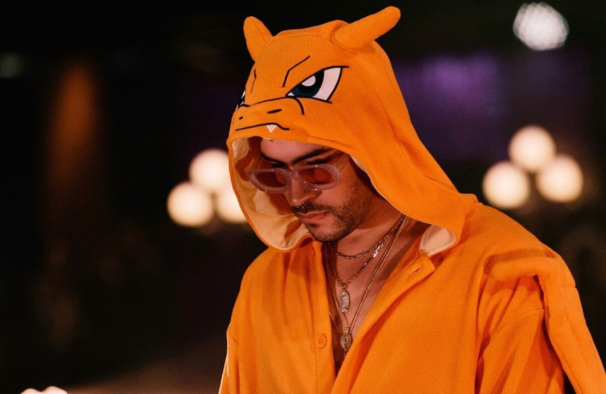

Datos curiosos de Bad Bunny
1- Sus inicios en la música: Su artista favorito era Daddy Yankee, en quien se inspiró para empezar a escribir y a grabar sus propias canciones. Comenzó de manera independiente a publicarlas en la plataforma de Soundcloud.
2- Diles: dio el salto a la popularidad en la industria del reggaetón con Diles, en 2016. Colaboró con otros artistas que también se convirtieron en fundamentales dentro del género, como Ozuna, Farruko, Arcángel y Ñengo Flow. Gracias a esta canción, consiguió su primer contrato discográfico.
3- El Conejo Malo es el artista más escuchado en el mundo